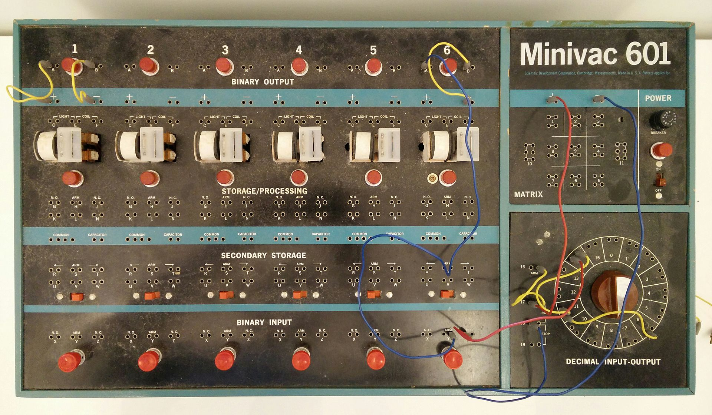

Claude Elwood Shannon (1916-2001) était un mathématicien, ingénieur électricien et cryptographe américain. Né à Petoskey, Michigan, il a grandi dans une famille modeste à Gaylord. Son père était un homme d'affaires local et sa mère était enseignante.
Shannon a obtenu deux diplômes de bachelor en mathématiques et en génie électrique à l'Université du Michigan en 1936. Il a ensuite poursuivi ses études au MIT, où il a obtenu son master en génie électrique et son doctorat en mathématiques en 1940.
Pendant ses études, Shannon a travaillé avec le Dr Vannevar Bush sur l'analyseur différentiel, l'un des premiers ordinateurs analogiques. Cette expérience a grandement influencé sa pensée future sur les systèmes de communication et l'informatique.
Source : Wikipedia